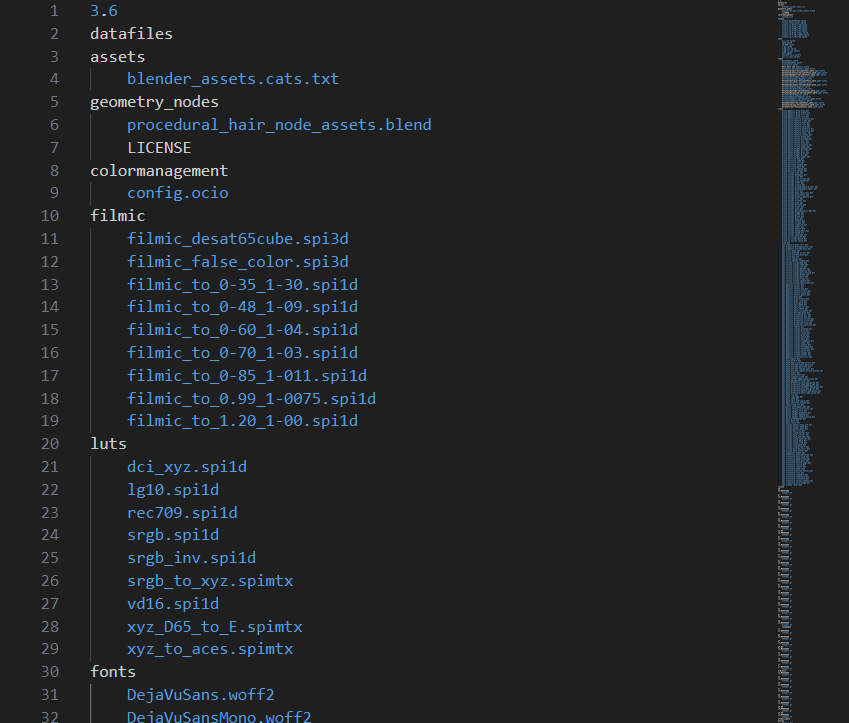

Python
Pythonでフォルダ構造を可視化しよう！
第1回：osモジュールで再帰取得
2024/01/30
大量のフォルダの中から特定のファイルを探したいとき、フォルダを1つずつ開くのは面倒。。
ファイル名で検索をかけてパッと調べられる方法があれば…。なんて思ったことのある人は少なくないはず。
そんな人のために、Pythonを使ったフォルダ解析の方法をまとめていこうと思います。
フォルダ解析の方法
Pythonでフォルダを解析する方法はいくつかあります。
- osモジュールで再帰取得
- globモジュール
- os.walk
このコラムでは例として、オープンソースソフトウェアのBlenderのファイル階層を解析しながら解説していきます。
osモジュールで再帰的にファイルを取得
まずは、osモジュールを使った方法です。
os.listdir() にディレクトリのパスを指定すると、ディレクトリ直下のファイル・フォルダの一覧がリストとして返ってきます。
import os
root_path = r"C:\Program Files\Blender Foundation\Blender 3.6"
items = os.listdir(root_path)
print("\n".join(items))
# >> 3.6 <= フォルダ
# >> blender-launcher.exe <= ファイル
# >> blender.crt
# >> blender.exe ...
print(type(items))
# >> <class 'list'>
▲ 名前順にソートされるため、エクスプローラとは並び順が違う。
全てのフォルダ階層の一覧を調べるには、リストの要素がフォルダかどうかを判定し、これを再帰的に実行してあげれば可能です。
os.path.isdir() にパスを指定すると、フォルダだった場合のみTrueが返ってきます。
ファイルかどうかを判定するには、os.path.isfile() を使います。
(ちなみに、パスが存在しない場合はFalseが返ってきます。例外はスローしません。)
import os
root_path = r"C:\Program Files\Blender Foundation\Blender 3.6"
def list_items(path):
items = os.listdir(path)
for i in items:
item = os.path.join(path, i) # フルパスに戻す
if os.path.isfile(item):
# ファイルの場合
print("\t{}".format(i))
elif os.path.isdir(item):
# フォルダの場合
print(i)
list_items(item) # 関数を再帰呼び出し
else:
# パスが存在しない場合
print(None)
list_items(root_path)
▼ 出力結果

これでディレクトリの中身をすべてリストアップすることができました！
ただし、今のところファイルだった場合にインデントを一つ下げているだけで、ディレクトリの階層の深さまでは分かりません。。
今回は、osモジュールの汎用的な関数を使ったやり方を解説しましたが、Pythonにはもっと便利な関数があります。
次回は、globモジュールを使った方法を解説したいと思います。